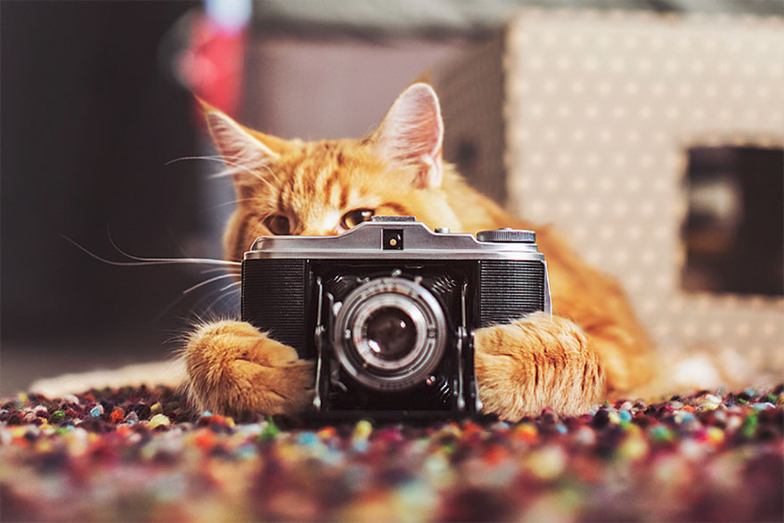

Организация мероприятий в VEGAT
Если вы задумываетесь о том, чтобы недорого организовать мероприятие в необычном месте, с интересной кухней, то VEGAT - ваш вариант.Мы не только подарим вам скидку на некоторые блюда в нашем меню и почасовое посещение каждым вашим гостем, но и предложим вам провести развлекательную программу по случаю. Если вас заинтересовало наше предложение, вы можете связаться с нами по телефону и почте, договориться о дате, времени и других подробностях мероприятия.
День рождения
Весёлые игры для детей разговоры на тему того, как нужно ухаживать за котиками/привычки котиков и их природа/как выглядит мир глазами котёнка! Тортики,пирожные и другие сладости в форме лапок,котиков и всё это из вегетарианском кухни! И МНОГО ВЕСЕЛЬЯ С КОТИКАМИ!
ОрганизоватьНовогодний праздник
Новогодние детское шоу - это много котиков в костюмах и вегетарианские сладости! Новогодний корпоратив - программа включающая в себя немного алкогольных напитков, дейстительно классное кошачье кораоке и много салатиков, которые можно частично забрать с собой.
Организовать8 марта
Провести международный женский день в компании лучших подруг - это мечта любой девушки. Множество вегетарианских и диетических пирожных не повредят фигуре, а много цветов поднимут настроение! Много котиков подарит позитив любой девушке в этот прекрасный праздник!
ОрганизоватьПриемущества мероприятия в VEGAT
- У нас есть специальные празничные наборы блюд, которые идут со скидкой при организации мероприятия.
- Фотограф-профессионал за счёт заведения!
- Милые ухоженные коты, точно лучше всего поздравят вас и помогут весело провести время. 